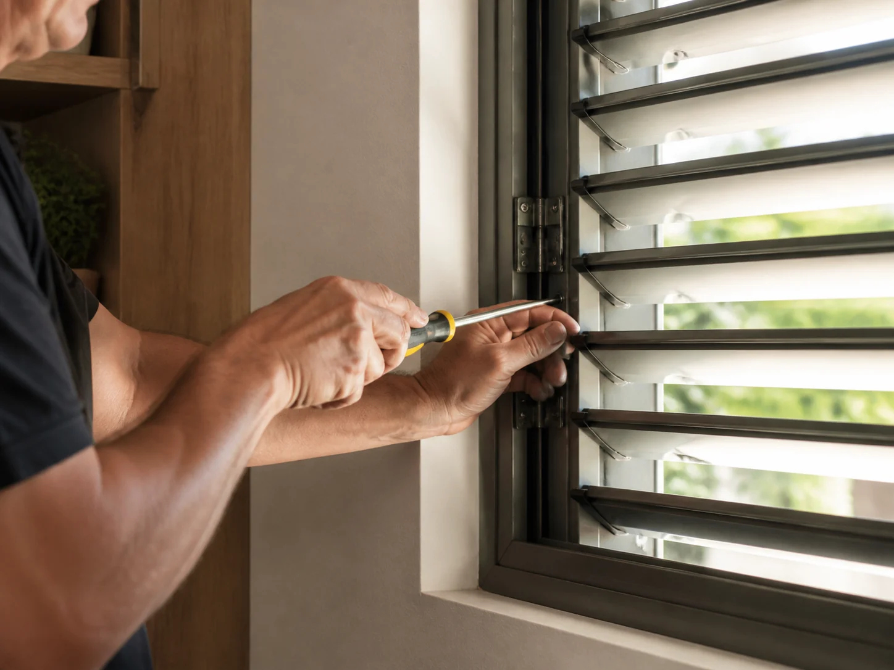

01
Manutenção especializada
Recupere o funcionamento antes de substituir tudo.
Avaliamos a estrutura existente e a possibilidade de reparar, ajustar ou substituir componentes danificados, incluindo aletas e vedação.
Enviar fotos do problema